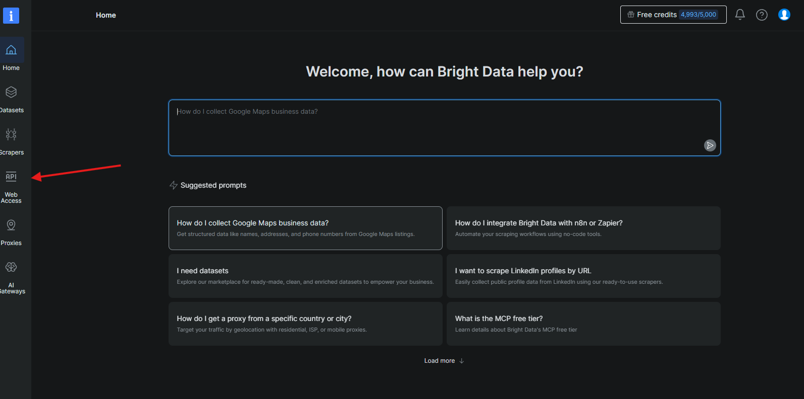
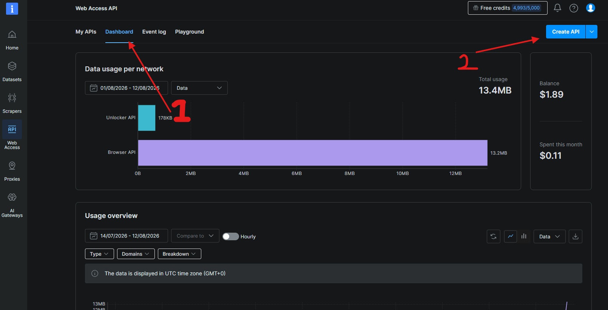
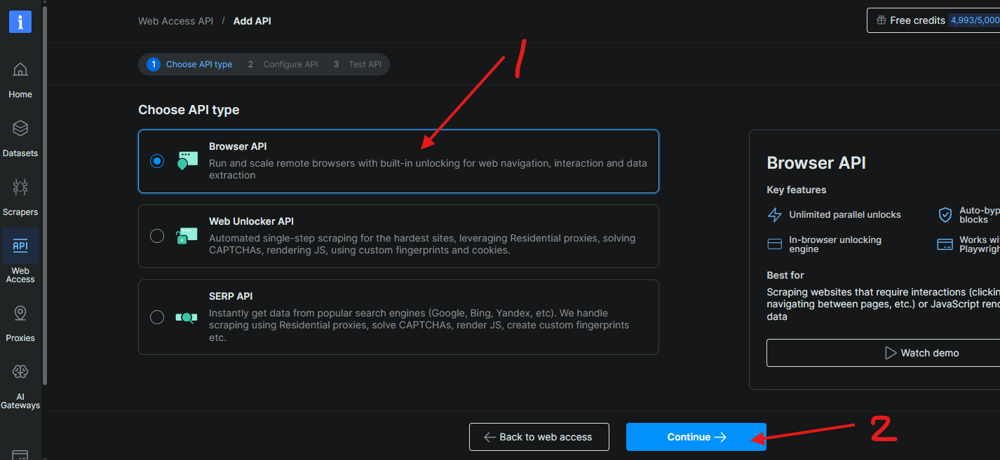
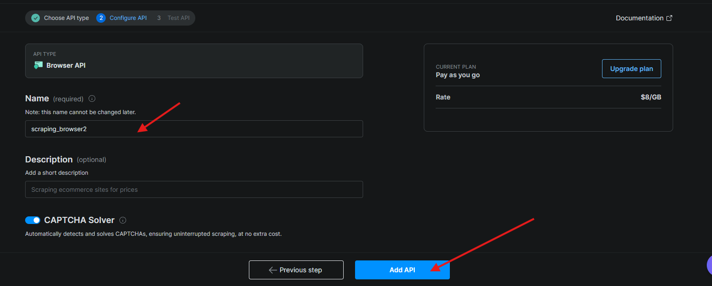
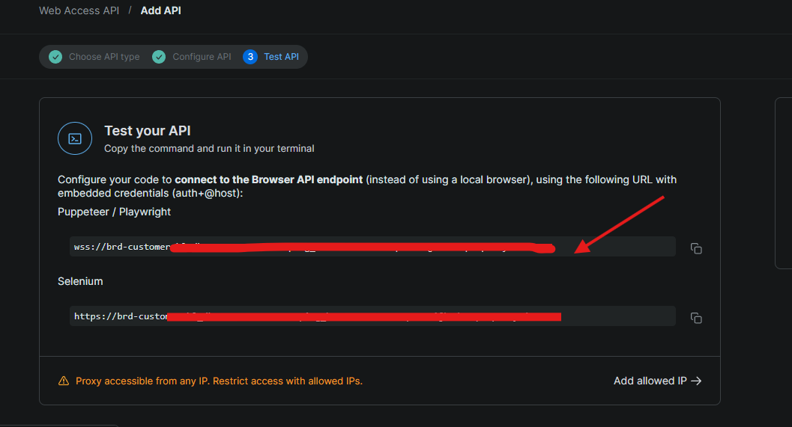

datanodes.to uses Cloudflare Turnstile to block bots. Bright Data's Scraping Browser solves it automatically in the cloud. Here's how to set it up.
Go to brightdata.com, sign up for a free account and log in. Once you're on the dashboard, click Web Access in the left sidebar.

Click the Dashboard tab, then click Create API in the top-right corner.

On the "Choose API type" screen, select Browser API (the top option), then click Continue.

Give it any name (e.g. scraping_browser1). Make sure CAPTCHA Solver is toggled on — this is what bypasses Cloudflare. Click Add API.

On the next screen you'll see a wss://... connection URL under Puppeteer / Playwright. Copy that entire line.

Open FitYoink, click the ⚙️ Settings icon in the top-right, paste your WSS URL into the Bright Data Scraping Browser WSS URL field, and click Save.
Now select 🗄 datanodes.to in FitYoink, paste your game page URL and click Fetch Links. FitYoink will handle the Cloudflare bypass automatically.